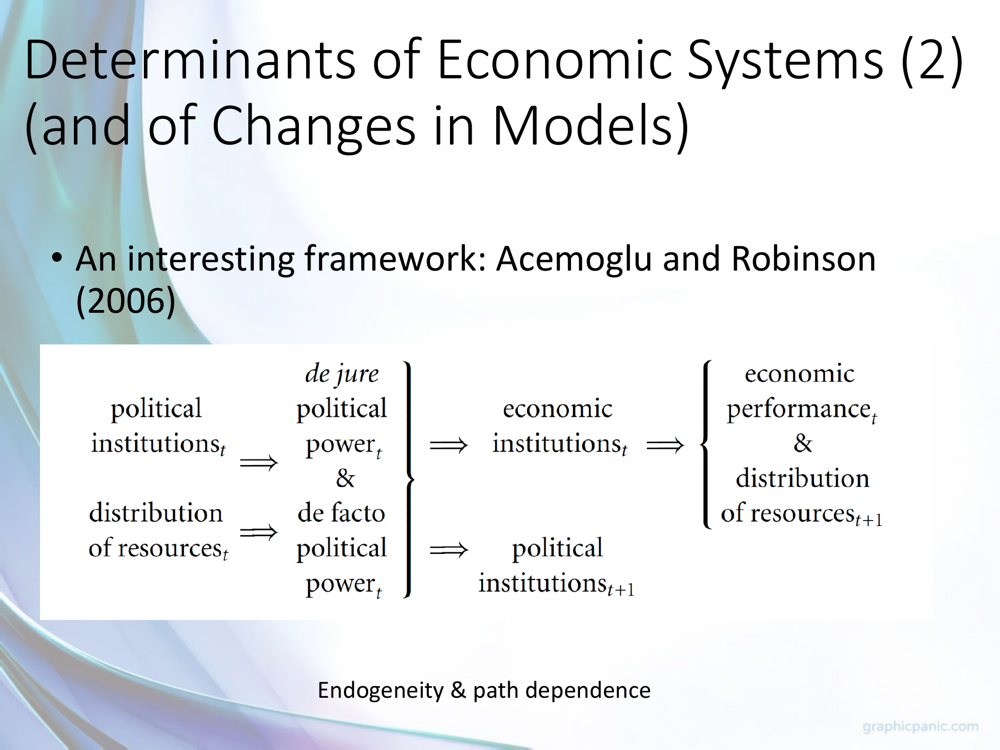
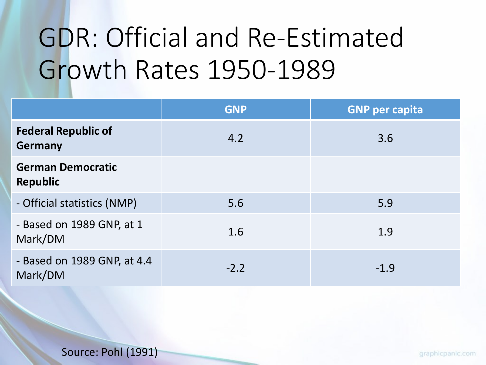

Explain institutional persistence and political feedback without determinism
Useful first: Classify economic systems across distinct dimensions, Discriminate cooperation and coordination through best responses
Lesson outline
- 02IntroductionSee the main question, learning objectives and prerequisites.
- 03Key definitions and conceptsGet familiar with the important terms and notation.
- 04Why imperfect institutions can persistIt would be a mistake to conclude that, because an institution could reduce a transaction cost, it will automatically appear wherever that problem exists.
- 05Systems change, and institutions feed back on themselvesThe lecture rejects a single inevitable route from tradition to feudalism to capitalism or from central planning to one market model.
- 06Why a striking comparison may still misleadThe lecture rejects a single inevitable route from tradition to feudalism to capitalism or from central planning to one market model.
- 07Why a striking comparison may still misleadExplore why a striking comparison may still mislead.
- 08Connect the reasoningExplore connect the reasoning.
- 09Worked exampleFollow a complete application of the reasoning.
- 10Practise the reasoningWork through written tasks, with optional support and solutions.
- 11Check your reasoning: an offline quizCheck your choices and see feedback without a connection.
- 12Check your understandingReview the key distinctions and check what you can explain.
- 13Test yourself laterTry another prepared question before rereading.
- 14SourcesFind the materials and limits behind the lesson.
Introduction
In this lesson, explain institutional persistence and political feedback without determinism.
2.1 What you’ll learn
- Given a reform or persistence vignette distinguish a rule’s present function from its historical origin, trace collective-action/coordination and beneficiary barriers
- Interpret the lecture’s power-feedback and Narrow Corridor diagrams qualitatively
- Explain path dependence without inevitable historical sequences.
2.2 Before you begin
- Classify economic systems across distinct dimensions
- Discriminate cooperation and coordination through best responses
Check the foundations
In a stag hunt, can everyone benefit from a new joint pattern yet stay at the old equilibrium? Why?
Reveal foundation explanation
yes, a lone switch can be worse and expectations about others matter.
Does private ownership identify who can legally remove rulers?
Reveal foundation explanation
no, political rules are separate;
Key definitions and concepts
- De jure power: Influence allocated by formal political rules.
- De facto power: Effective influence arising from resources and organization.
- Path dependence: Past institutions constrain later choices without fixing an inevitable sequence.
Why imperfect institutions can persist
It would be a mistake to conclude that, because an institution could reduce a transaction cost, it will automatically appear wherever that problem exists. Roland calls the inference from a thing's present function to the cause of its origin the functionalist fallacy.
His microwave example makes the logic clear: an invention's later use need not have been its designer's original aim. Similarly, political settlers seeking protection from tyranny may create rules that later support commerce, even if promoting growth was not their stated purpose.
Knowing how a rule works and knowing why it arose are separate questions. ,
Inefficient institutions can last because replacing them requires people to organize, bear costs and overcome those who benefit from the existing arrangement. Weak courts, insecure property rights and restrictions on association can themselves make reform harder.
Coordination creates an additional hurdle: each person may wait for others to adopt a better pattern before changing their own behaviour. Thus observing a bad rule does not prove no better rule is possible, and observing a useful rule does not prove it arose because it was efficient.
The chapter particularly emphasizes collective-action barriers and imperfect democracy; it does not supply a universal account of every institution's history. , ,
The chapter locates this argument in an institutionalist tradition. Veblen stressed status-motivated consumption and social norms;
Commons treated transactions and legal rules as central; Coase examined transaction costs, the firm and property rights;
Williamson developed asset specificity and hold-up; North emphasized long-run property-rights institutions;
and Olson explained free riding in collective action. These are conceptual connections supplied by Roland, not six independent empirical tests in this chapter. ,
Systems change, and institutions feed back on themselves
The lecture rejects a single inevitable route from tradition to feudalism to capitalism or from central planning to one market model. It uses China and Russia to illustrate different, politically shaped transition paths toward forms it calls state capitalism. Path dependence means that earlier arrangements alter the resources, expectations, and power of later decision makers;
a reform starts from that inherited position. A related survivorship bias arises if we infer the original form of all traditional societies only from those that still survive.
A system change may lack a deliberate starting decision or a clear start date; where there was a decision, the new system could have been imposed rather than voluntarily chosen, as with Soviet-bloc central planning.
The design and survival of a system can also serve political goals, so political control can help stabilize it even when its economic results are poor for much of the population. These are interpretive claims from the slides, not proof that one historical path is universal.

The lecture's Narrow Corridor schematic places state power vertically and society's power horizontally. It labels a corridor where state capacity is constrained by organized society as the Shackled Leviathan;
outside it are a Despotic Leviathan where state power dominates, an Absent Leviathan with weak state capacity, and a weak-both Paper Leviathan. The country labels are illustrative placements in a qualitative model, not measured coordinates or a necessary sequence of development.
This visual connects political constraints to economic institutions; the course's uploaded Why Nations Fail chapter supplies a different historical argument, so one should not pretend that chapter itself contains this figure.

The lecture's Acemoglu–Robinson (2006) feedback diagram links today's political institutions to de jure (legally assigned) power, and today's distribution of resources to de facto (effective) power. Together those forms of power help shape today's economic institutions and tomorrow's political institutions.
Economic institutions affect economic performance and the next resource distribution, which feeds back into later power. The arrows express a conceptual causal mechanism and endogeneity, not measured coefficients or algebraic identities.
5.1 Why a striking comparison may still mislead

Austria–Czechoslovakia comparison. The chart plots GDP per person in 1990 international Geary–Khamis dollars over 1820–2010 using the Maddison Project 2013 version. The visible gap later in the series motivates a question about divergent institutions and systems.
It does not isolate a causal effect of socialism: war, borders, industrial structure, measurement, and other historical differences also require analysis. The slide retains a “Czecho-slovakia” series for 2000 and 2010, after the state's dissolution, without explaining how those observations were constructed.
Read its units, source date, and this labeling limit before using it as evidence.

Germany measurement example. For 1950–1989, the slide reports West German GNP and GNP-per-person growth figures of \(4.2\) and \(3.6\), while its East German official NMP series reports \(5.6\) and 5.9. Two re-estimates of East German GNP using different 1989 Mark/DM conversions report \(1.6\)/\(1.9\) and \(-2.2\)/\(-1.9\) respectively.
The table's labels do not print a unit for these rates, and NMP and GNP are different aggregates. The key lesson is sensitivity to accounting and conversion, not a precise uncontested ranking from unlike numbers.
The lecture surveys geography, culture, and leaders' ignorance as proposed explanations of prosperity, then poses Nogales and other counterexamples to simple one-factor accounts. It argues that trust and cooperation can themselves be shaped by institutions.
These examples show why competing explanations must be examined; they do not mean geography or culture never matters.
The Nogales and colonial-history note explains the uploaded chapter's own evidence and its limits in detail.
Finally, the lecture's Lagos insecurity scenario, Adam Smith quotation, and China discussion all point to the same decision mechanism: if property claims, contract enforcement, or predictable treatment are doubtful, an investor has reason to protect or conceal resources, seek personal connections, or use shorter-horizon opportunities. The China slide specifically names inconsistent rules, weak independent judicial checks, and reliance on guanxi networks;
those are lecturer claims for discussion, not a blanket characterization of every Chinese transaction. The uploaded Roland chapter explains the contracting problems behind that intuition. Institutions and economic development
The lecture's final example is a screenshot of a September 2024 article describing a debated practice in which a relative's conviction can restrict access to certain public jobs, university programs, or military service. It illustrates an indirect effect of legal rules on people who were not convicted and why households may care about predictability and equal application.
The screenshot reports nearly 25 million recorded offenders during 2000–2022 and states that some 100 million people could be at risk if each has three affected relatives. That multiplication gives about 75 million relative instances before any overlap;
the article does not explain the difference. Neither number is an observed count of people actually penalized.
The slide presents this as an article excerpt, not as independently verified course data.
Why a striking comparison may still mislead
Read the full checked source context
The lecture rejects a single inevitable route from tradition to feudalism to capitalism or from central planning to one market model. It uses China and Russia to illustrate different, politically shaped transition paths toward forms it calls state capitalism. Path dependence means that earlier arrangements alter the resources, expectations, and power of later decision makers;
a reform starts from that inherited position. A related survivorship bias arises if we infer the original form of all traditional societies only from those that still survive.
A system change may lack a deliberate starting decision or a clear start date; where there was a decision, the new system could have been imposed rather than voluntarily chosen, as with Soviet-bloc central planning.
The design and survival of a system can also serve political goals, so political control can help stabilize it even when its economic results are poor for much of the population. These are interpretive claims from the slides, not proof that one historical path is universal.
The lecture's Narrow Corridor schematic places state power vertically and society's power horizontally. It labels a corridor where state capacity is constrained by organized society as the Shackled Leviathan;
outside it are a Despotic Leviathan where state power dominates, an Absent Leviathan with weak state capacity, and a weak-both Paper Leviathan. The country labels are illustrative placements in a qualitative model, not measured coordinates or a necessary sequence of development.
This visual connects political constraints to economic institutions; the course's uploaded Why Nations Fail chapter supplies a different historical argument, so one should not pretend that chapter itself contains this figure.
The lecture's Acemoglu–Robinson (2006) feedback diagram links today's political institutions to de jure (legally assigned) power, and today's distribution of resources to de facto (effective) power. Together those forms of power help shape today's economic institutions and tomorrow's political institutions.
Economic institutions affect economic performance and the next resource distribution, which feeds back into later power. The arrows express a conceptual causal mechanism and endogeneity, not measured coefficients or algebraic identities.
Why a striking comparison may still mislead
Read the full checked source context
Austria–Czechoslovakia comparison. The chart plots GDP per person in 1990 international Geary–Khamis dollars over 1820–2010 using the Maddison Project 2013 version. The visible gap later in the series motivates a question about divergent institutions and systems.
It does not isolate a causal effect of socialism: war, borders, industrial structure, measurement, and other historical differences also require analysis. The slide retains a “Czecho-slovakia” series for 2000 and 2010, after the state's dissolution, without explaining how those observations were constructed.
Read its units, source date, and this labeling limit before using it as evidence.
Germany measurement example. For 1950–1989, the slide reports West German GNP and GNP-per-person growth figures of \(4.2\) and \(3.6\), while its East German official NMP series reports \(5.6\) and 5.9. Two re-estimates of East German GNP using different 1989 Mark/DM conversions report \(1.6\)/\(1.9\) and \(-2.2\)/\(-1.9\) respectively.
The table's labels do not print a unit for these rates, and NMP and GNP are different aggregates. The key lesson is sensitivity to accounting and conversion, not a precise uncontested ranking from unlike numbers.
The lecture surveys geography, culture, and leaders' ignorance as proposed explanations of prosperity, then poses Nogales and other counterexamples to simple one-factor accounts. It argues that trust and cooperation can themselves be shaped by institutions.
These examples show why competing explanations must be examined; they do not mean geography or culture never matters.
The Nogales and colonial-history note explains the uploaded chapter's own evidence and its limits in detail.
Finally, the lecture's Lagos insecurity scenario, Adam Smith quotation, and China discussion all point to the same decision mechanism: if property claims, contract enforcement, or predictable treatment are doubtful, an investor has reason to protect or conceal resources, seek personal connections, or use shorter-horizon opportunities. The China slide specifically names inconsistent rules, weak independent judicial checks, and reliance on guanxi networks;
those are lecturer claims for discussion, not a blanket characterization of every Chinese transaction. The uploaded Roland chapter explains the contracting problems behind that intuition. Institutions and economic development
The lecture's final example is a screenshot of a September 2024 article describing a debated practice in which a relative's conviction can restrict access to certain public jobs, university programs, or military service. It illustrates an indirect effect of legal rules on people who were not convicted and why households may care about predictability and equal application.
The screenshot reports nearly 25 million recorded offenders during 2000–2022 and states that some 100 million people could be at risk if each has three affected relatives. That multiplication gives about 75 million relative instances before any overlap;
the article does not explain the difference. Neither number is an observed count of people actually penalized.
The slide presents this as an article excerpt, not as independently verified course data.
Connect the reasoning
- Explain what a rule does now, then ask a distinct historical question about why it arose. The ability to lower transaction costs is neither proof of intentional efficient design nor proof it will appear automatically.
- Identify who would gain from reform, who bears participation/switching costs and who loses privilege. A low-trust pattern can be individually stable even with a better joint pattern; beneficiaries may impede organization.
- Read feedback in time order: today’s political institutions shape de jure power; resource distribution shapes de facto power; both shape today’s economic institutions and tomorrow’s political institutions. Economic institutions affect performance and next resource distribution, which influences later effective power. Arrows are proposed mechanisms/endogeneity, not coefficients or identities.
- Read corridor qualitatively: constrained state capacity with organized society is Shackled Leviathan; dominant state is Despotic; weak state is Absent; weak-both is Paper. These illustrative labels/country placements have no measured coordinate or inevitable country route.
- Explain why transition may be imposed or have no clear start decision/date, why China/Russia examples differ, and why political control can sustain an economically poor arrangement. Earlier arrangements constrain options but reform/conflict remains possible. Thinkers Veblen/Commons/Coase/Williamson/North/Olson are conceptual connections in Roland, not six independent empirical tests. No scholar-name recall criterion is added.
Worked example
9.1
Hypothetical: an old licensing rule restricts entry; favored firms fund officials. Most citizens favor open entry but expect others to bear lobbying costs and fear being first. Explain persistence, origin/function distinction and both lecture diagrams; evaluate “all societies must progress along the same path.”
Solution: Existing privilege creates concentrated beneficiaries and diffuse participation costs; expectations can keep reformers at a low-action pattern.
A license may currently screen quality, but that function alone does not prove why it was created. Legal office rules define de jure power, wealthy firms supply de facto influence, together affecting entry rules and future politics;
profits/resource distribution can reinforce influence. Corridor axes state/society power and four qualitative labels do not assign this country a measured location.
Path dependence constrains reform without fixing it; transitions vary, may be imposed/no single start, and universal sequence is unsupported.
The vignette is hypothetical mechanism, not an identified case.
Practise the reasoning
Write your reasoning before revealing an explanation. Begin with support, then apply the ideas to another situation.
10.1 Written exercise 1
Completion: a weak court encourages a small trusted network;
Solve the following:
- people want broader trade but wait for others to switch.
- An incumbent profits from the network.
- Fill collective/coordination/beneficiary mechanisms, explain why present trust function is not origin evidence, reconstruct feedback and corridor axes/labels, and state two historical-inference limits.
Show a hint
Pause before calculating or choosing an explanation:
- What quantities, actors or outcomes are being compared? Write their roles, units and dates beside them.
- Which condition decides whether the relationship applies? Check the relevant definition before using a formula or classifying the case.
- What would have to remain fixed for your comparison to be meaningful? Work through one link in the reasoning at a time.
- How could you check the direction, boundary case or alternative explanation before stating your conclusion?
A local draft for your own study.
Reveal explanation
Solution: Collective reform costs/free riding, waiting for reciprocal adoption, and incumbent profit can sustain the arrangement. Trust’s present useful function cannot explain origin by itself.
Formal political rules \(\to\) de jure power; resources \(\to\) de facto power;
both \(\to\) economic rules/current and next political rules; economic outcomes/next resources feed back.
Corridor: state vertical/society horizontal, Shackled constrained-capacity corridor, Despotic state dominance, Absent weak state, Paper weak-both. Labels qualitative, no measured causal coefficients or inevitable route.
Earlier arrangements shape possibilities but do not forbid change; surviving examples cannot reconstruct all original systems.
10.2 Written exercise 2
Hypothetical licensing vignette: connected incumbents profit;
Solve the following:
- citizens favor reform but wait for others to organize and adopt new rules.
- Explain three persistence barriers, function/origin distinction, full de jure/de facto feedback chain and all four Narrow Corridor labels/axes.
- Distinguish path dependence from permanence and note survivorship-bias or imposed-transition limit.
A local draft for your own study.
Reveal explanation
Solution: Incumbent resistance, costly collective organization/free riding and conditional coordination can block a better rule. A current screening function does not prove original motive.
Political institutions \(\to\) de jure power; resource distribution \(\to\) de facto power;
both \(\to\) current economic institutions and next political institutions; economic institutions \(\to\) performance/next resources \(\to\) later power.
State power vertical/society horizontal; Shackled constrained capacity, Despotic state dominance, Absent weak state, Paper weak-both.
Qualitative placements/arrows not estimates, chapter attribution distinct. Path dependence shapes options/power not permanence;
surviving traditional cases bias origin inference, or change can be imposed/no single starting decision.
10.3 Written exercise 3
A hypothetical ineffective property registry benefits brokers;
Solve the following:
- reformers face organizing costs and distrust adoption by others.
- Explain persistence, reject “the registry exists to raise efficiency, so that proves its origin,” trace the lecture feedback and corridor axes/four labels, and qualify an inevitable transition claim using path dependence and survivorship or imposed-change reasoning.
A local draft for your own study.
Reveal explanation
Solution: Brokers defend benefits, reform has collective costs/free riding and adoption coordination/trust barriers. Current function cannot establish historical origin or automatic efficient emergence.
De jure from political rules and de facto from resources jointly shape economic/current and next political rules; outcomes/next resource distribution reinforce later power.
Corridor axes state vertical/society horizontal; Shackled, Despotic, Absent and Paper meanings as above, qualitative and not this chapter’s diagram.
Inherited position alters later incentives without deterministic sequence; survival selection hides lost forms, or imposed/gradual transitions complicate deliberate start dates.
10.4 Another chance to practise
Fresh correction: a rule now improves commerce but was reportedly adopted to restrain tyranny.
Solve the following:
- Does commerce explain its origin?
A local draft for your own study.
Reveal explanation
No; present commercial function can differ from original political purpose, and actual origin needs historical evidence.
10.5 Another chance to practise
Fresh correction: a sketch locates country Z in a corridor without axis numbers.
Solve the following:
- Can one compute its reform probability or necessary next stage?
A local draft for your own study.
Reveal explanation
No numerical probability/necessary stage is supported. State/society power are qualitative and paths depend on choices, resources and power.
Check your reasoning: an offline quiz
Choose one answer per question. Check individual answers or check the whole quiz. Each option includes feedback on the reasoning, and everything works offline.
Reveal explanation
Trace the feedback between beneficiaries, power and institutional persistence.
Reveal explanation
Separate explanation of current effects from evidence about why an institution arose.
Reveal explanation
A preference for change is not the same as coordinated effective action.
Check your understanding
A common mistake: says current usefulness proves efficient intentional creation.
A consequence or present function and a historical cause are separate propositions; require origin evidence.
The diagrams map qualitative mechanisms; inherited constraints still permit multiple paths and reforms.
- Given a reform or persistence vignette distinguish a rule’s present function from its historical origin, trace collective-action/coordination and beneficiary barriers
- Interpret the lecture’s power-feedback and Narrow Corridor diagrams qualitatively
- Explain path dependence without inevitable historical sequences.
Test yourself later
Return to these questions after a break, before rereading the explanation. Use a question you have not just viewed.
13.1 Review question 1
Hypothetical cartel-backed public rule survives low growth despite broad support for change.
Solve the following:
- Reformers cannot organize and each waits for others.
- Explain all persistence mechanisms and function/origin distinction, reconstruct both lecture diagrams (axes, four corridor labels, power-feedback chain), and explain path dependence plus a sampling/start-date caveat.
A local draft for your own study.
Reveal explanation
Solution: Concentrated beneficiary resistance, diffuse costly collective action and conditional coordination can sustain poor aggregate performance. An alleged present beneficial function neither establishes origin nor guarantees efficiency.
Political institutions \(\to\) de jure; resources \(\to\) de facto;
both \(\to\) economic rules and future political rules; economic rules \(\to\) performance/next resources \(\to\) future power.
State vertical/society horizontal corridor: Shackled constrained strong capacity, Despotic dominant state, Absent weak state, Paper weak-both. Qualitative, no measured coordinates/coefficients or inevitable progression.
Earlier rules constrain options but can change; surviving forms bias reconstruction or imposed/gradual transition can lack deliberate exact start.
13.2 Review question 2
Hypothetical standards regime benefits incumbents;
Solve the following:
- new standard is jointly better but switching alone is costly, and lobbying has diffuse costs.
- Explain persistence and distinguish functional use from origin, trace de jure/de facto feedback and Narrow Corridor axes/labels, then qualify “history makes reform impossible” and an origin claim from only surviving societies.
A local draft for your own study.
Reveal explanation
Solution: Beneficiary resistance, collective-action lobbying costs and coordination/switching barriers persist despite joint gains. Useful coordination today is not proof of intentional original design.
Legal political rules give de jure, resources de facto influence; jointly shape economic and next political rules;
performance/next resources feed back to later power. State vertical/society horizontal, Shackled constrained capacity, Despotic dominant state, Absent weak state, Paper weak-both;
descriptive qualitative model not chapter’s plot or measured causality. Path dependence constrains, not prevents reform;
surviving societies are a selected subset and cannot identify all original forms.
Sources
Show materials and lesson scope
- Roland, PDF p. 24 (printed p. 198)
- Roland, PDF p. 25 (printed p. 199)
- Roland, PDF p. 22 (printed p. 196)
- Roland, PDF p. 26 (printed p. 200)
- Week I lecture, PDF slides 31–36
- Week I lecture, PDF slides 34–35
- Week I lecture, PDF slides 43–44
- Week I lecture, PDF slide 40
- Week I lecture, PDF slide 41, table attributed there to Pohl (1991)
- Week I lecture, PDF slides 37–43
- Week I lecture, PDF slides 46–52
- Week I lecture, PDF slide 52
Numerical and contextual illustrations are hypothetical unless explicitly described as a reported result. Historical data, model assumptions and unresolved source differences retain their stated limits.
These exercises are for self-study. Viewing a prepared item or solution may make that item unsuitable as a fresh check in a tutor chat. This page does not record an assessed learning result.